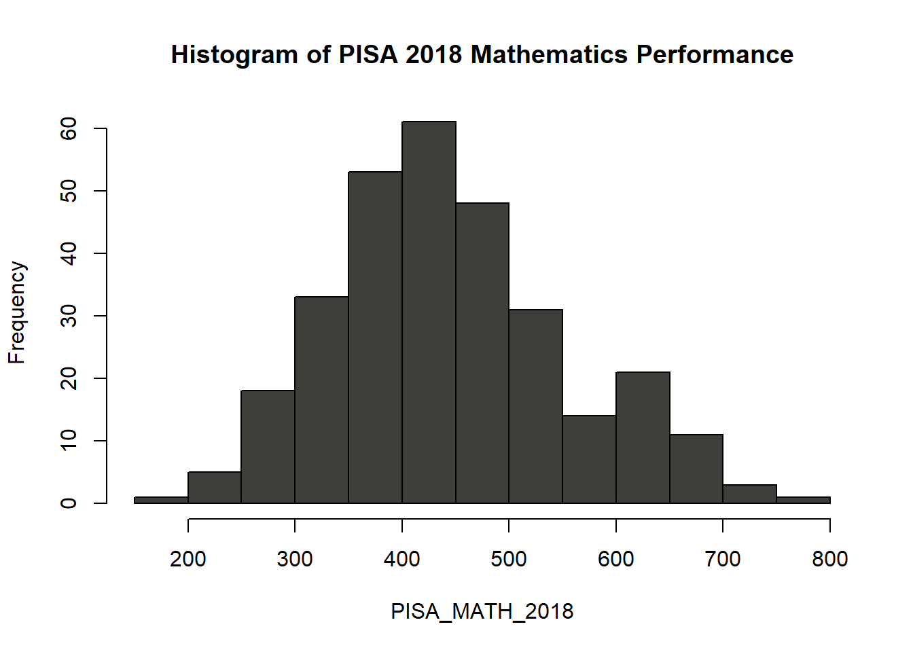
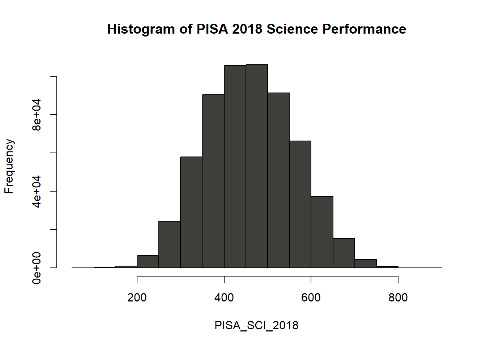
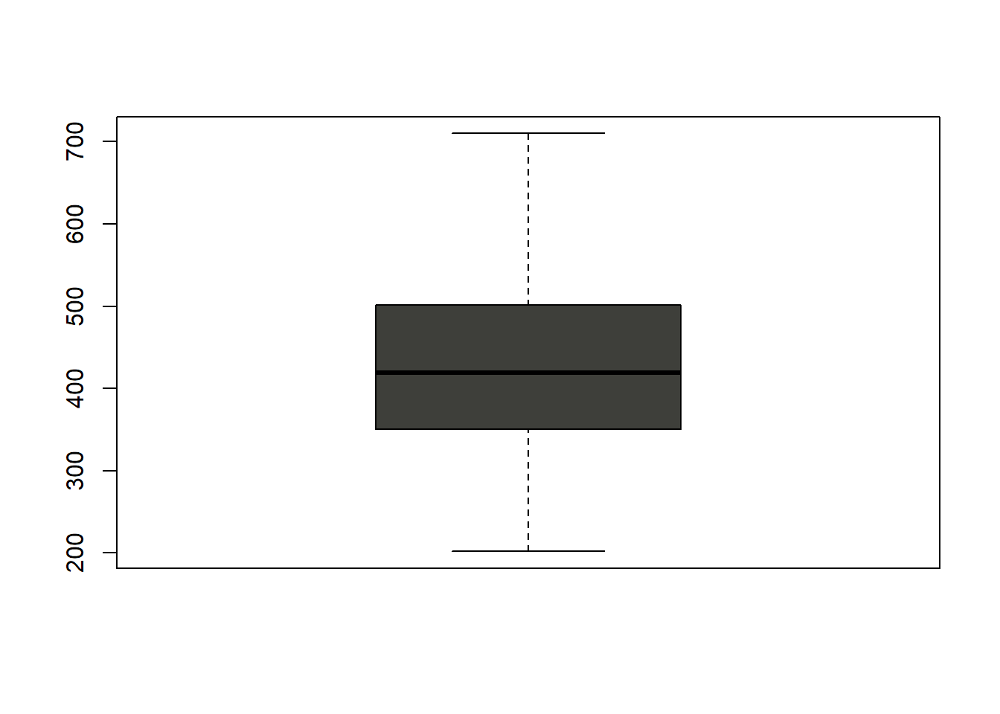
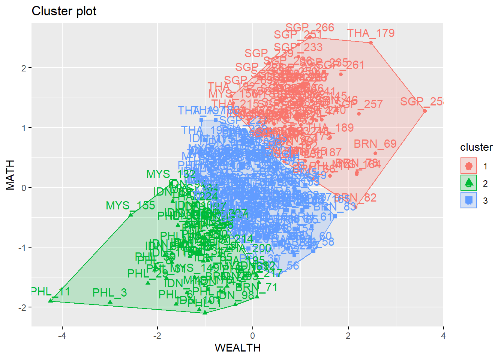

Process
NOTE: Testing data for K-Means Clustering 🧪🧪🧪
Table of Contents
Dependency Imports
library(learningtower)
library(dplyr)
library(tidyr)
library(factoextra)
library(reactable)Importing PISA 2018 Data
# Loading the PISA 2018 data and assigning it to variable PISA_2018
# Filtering ASEAN countries to be loaded
# Brunei, Cambodia, Indonesia, Laos, Malaysia, Myanmar, Philippines, Singapore, # Thailand and, Vietnam
PISA_2018 <- load_student(2018)
# Filtering ASEAN countries and assigning them into their own data-frames
PH <- filter(PISA_2018, country == 'PHL')
BRN <- filter(PISA_2018, country == 'BRN')
IDN <- filter(PISA_2018, country == 'IDN')
KHM <- filter(PISA_2018, country == 'KHM') # Did not participate
LAO <- filter(PISA_2018, country == 'LAO') # Did not participate
MYS <- filter(PISA_2018, country == 'MYS')
THA <- filter(PISA_2018, country == 'THA')
VNM <- filter(PISA_2018, country == 'VNM')
SGP <- filter(PISA_2018, country == 'SGP')
MMR <- filter(PISA_2018, country == 'MMR') # Did not participate
# There are in total 3 countries that did not participate in the PISA 2018 assessment
NO_OF_SAMPLE <- 50
# Building ASEAN data-frame
ASEAN_PISA_2018 = rbind.data.frame(
sample_n(PH, NO_OF_SAMPLE),
sample_n(BRN, NO_OF_SAMPLE),
sample_n(IDN, NO_OF_SAMPLE),
sample_n(MYS, NO_OF_SAMPLE),
sample_n(THA, NO_OF_SAMPLE),
sample_n(VNM, NO_OF_SAMPLE),
sample_n(SGP, NO_OF_SAMPLE)
)
# Output of the sample
reactable(head(PISA_2018),
searchable = TRUE,
striped = TRUE,
highlight = TRUE,
bordered = TRUE,
theme = reactableTheme(
borderColor = "#dfe2e5",
stripedColor = "#f6f8fa",
highlightColor = "#f0f5f9",
cellPadding = "8px 12px"))PISA 2018 Data Format
Total Number of Observations: 612,004 in the year 2018 alone
| Variable Name | Variable Type |
|---|---|
| year | Factor |
| country | Factor |
| school_id | Factor |
| student_id | Factor |
| mother_educ | Factor |
| father_educ | Factor |
| gender | Factor |
| computer | Factor |
| internet | Factor |
| math | Numeric |
| science | Numeric |
| read | Numeric |
| stu_wgt | Numeric |
| desk | Factor |
| room | Factor |
| dishwasher | Factor |
| television | Factor |
| computer_n | Factor |
| car | Factor |
Exploring the Data
# Class of the data
class(PISA_2018)## [1] "tbl_df" "tbl" "data.frame"# Total number of rows and columns in the data-set
dim(PISA_2018)## [1] 612004 22| Class | Dimension |
|---|---|
| data.frame |
612004 Observations 22 Variables |
Summary Statistics of the Data-set
# Mathematics summary Stats
MATH_STAT_2018 <- summary(ASEAN_PISA_2018$math)| Mininum | 1st Quarter | Median | Mean | 3rd Quarter | Max | Missing |
|---|---|---|---|---|---|---|
| 24.74 | 386.66 | 460.66 | 461.22 | 535.28 | 888.06 | 5377 |
# Science summary Stats
SCI_STAT_2018 <- summary(ASEAN_PISA_2018$science)| Mininum | 1st Quarter | Median | Mean | 3rd Quarter | Max | Missing |
|---|---|---|---|---|---|---|
| 58.74 | 385.60 | 458.20 | 460.69 | 533.44 | 886.08 | 5377 |
PISA_MATH_2018 <- ASEAN_PISA_2018$math
hist(PISA_MATH_2018,
main = paste("Histogram of", "PISA 2018 Mathematics Performance"),
col="#3e3f3a")
Distribution: Normal
PISA_SCI_2018 <- ASEAN_PISA_2018$science
hist(PISA_SCI_2018,
main = paste("Histogram of", "PISA 2018 Science Performance"),
col = "#3e3f3a")
Distribution: Normal
boxplot(na.omit(PISA_MATH_2018), col="#3e3f3a")
boxplot(na.omit(PISA_SCI_2018), col="#3e3f3a")
Summary Statistics of the remaining Variables
## year country school_id student_id mother_educ
## 2000: 0 BRN :50 9600043 : 5 36000099: 1 ISCED 1 : 47
## 2003: 0 IDN :50 9600034 : 4 36000115: 1 ISCED 2 : 60
## 2006: 0 MYS :50 36000202: 3 36001531: 1 ISCED 3A :196
## 2009: 0 PHL :50 45800078: 3 36001692: 1 ISCED 3B, C : 25
## 2012: 0 SGP :50 76400163: 3 36002429: 1 less than ISCED1: 18
## 2015: 0 THA :50 9600007 : 3 36002938: 1 NA's : 4
## 2018:350 (Other):50 (Other) :329 (Other) :344
## father_educ gender computer internet math
## ISCED 1 : 37 female:177 no :154 no : 77 Min. :201.8
## ISCED 2 : 63 male :173 yes :194 yes :268 1st Qu.:350.5
## ISCED 3A :184 NA's: 2 NA's: 5 Median :419.3
## ISCED 3B, C : 38 Mean :429.0
## less than ISCED1: 20 3rd Qu.:500.7
## NA's : 8 Max. :710.0
## NA's :50
## read science stu_wgt desk room
## Min. :178.7 Min. :212.9 Min. : 1.000 no : 46 no :105
## 1st Qu.:321.5 1st Qu.:361.1 1st Qu.: 7.122 yes :300 yes :242
## Median :401.0 Median :420.0 Median : 65.700 NA's: 4 NA's: 3
## Mean :411.6 Mean :435.0 Mean : 115.904
## 3rd Qu.:478.1 3rd Qu.:501.0 3rd Qu.: 163.145
## Max. :710.9 Max. :751.1 Max. :1245.506
## NA's :50 NA's :50
## dishwasher television computer_n car book wealth
## no : 0 0 : 7 0 : 98 0 :152 26-100 :103 Min. :-7.1134
## yes : 0 1 :159 1 :118 1 : 94 11-25 : 94 1st Qu.:-2.2001
## NA's:350 2 :112 2 : 56 2 : 43 0-10 : 77 Median :-1.2547
## 3+ : 68 3+ : 74 3+ : 50 101-200: 36 Mean :-1.2303
## NA's: 4 NA's: 4 NA's: 11 201-500: 21 3rd Qu.:-0.2026
## (Other): 16 Max. : 3.9531
## NA's : 3 NA's :2
## escs
## Min. :-3.93080
## 1st Qu.:-1.69988
## Median :-0.87700
## Mean :-0.89131
## 3rd Qu.:-0.01137
## Max. : 1.90430
## NA's :2Data Cleaning
To test K-Means Clustering we have follow its input data requirements:
* Numerical variables only
* Data must have no noises or outliers
* Data has symmetric distribution of variables (it isn’t skewed)
* Variables on the same scale
* There is not collinearity
* Few numbers of dimensions (Not necessary but as a general rule of thumb; fewer the better)
# Renaming columns to UPPERCASE
CNT <- ASEAN_PISA_2018$country
SCH_ID <- ASEAN_PISA_2018$school_id
STU_ID <- ASEAN_PISA_2018$country
MOTHER_ED <- ASEAN_PISA_2018$mother_educ
FATHER_ED <- ASEAN_PISA_2018$father_educ
GENDER <- ASEAN_PISA_2018$gender
COMPUTER <- ASEAN_PISA_2018$computer
INTERNET <- ASEAN_PISA_2018$internet
MATH <- ASEAN_PISA_2018$math
SCIENCE <- ASEAN_PISA_2018$science
STU_WGT <- ASEAN_PISA_2018$stu_wgt
DESK <- ASEAN_PISA_2018$desk
NO_TV <- ASEAN_PISA_2018$television
NO_COMPUTER <- ASEAN_PISA_2018$computer_n
NO_CAR <- ASEAN_PISA_2018$car
NO_BOOK <- ASEAN_PISA_2018$book
WEALTH <- ASEAN_PISA_2018$wealth
ESCS <- ASEAN_PISA_2018$escs
# Rebuilding new student profile
# Invoking na.omit to remove missing values from the data-set
STUDENT_PROFILE_2018 = na.omit(data.frame(
CNT,
SCH_ID,
STU_ID,
MOTHER_ED,
FATHER_ED,
GENDER,
COMPUTER,
INTERNET,
MATH,
SCIENCE,
STU_WGT,
DESK,
NO_TV,
NO_COMPUTER,
NO_CAR,
NO_BOOK,
WEALTH,
ESCS
))
# Summarizing new student profile data-set
summary(STUDENT_PROFILE_2018)## CNT SCH_ID STU_ID MOTHER_ED
## THA :49 36000202: 3 THA :49 ISCED 1 : 32
## MYS :48 45800078: 3 MYS :48 ISCED 2 : 39
## IDN :46 76400163: 3 IDN :46 ISCED 3A :169
## SGP :46 9600007 : 3 SGP :46 ISCED 3B, C : 21
## PHL :43 9600034 : 3 PHL :43 less than ISCED1: 11
## BRN :40 9600043 : 3 BRN :40
## (Other): 0 (Other) :254 (Other): 0
## FATHER_ED GENDER COMPUTER INTERNET MATH
## ISCED 1 : 27 female:143 no :110 no : 61 Min. :201.8
## ISCED 2 : 41 male :129 yes:162 yes:211 1st Qu.:356.5
## ISCED 3A :156 Median :424.9
## ISCED 3B, C : 34 Mean :432.8
## less than ISCED1: 14 3rd Qu.:513.1
## Max. :710.0
##
## SCIENCE STU_WGT DESK NO_TV NO_COMPUTER NO_CAR
## Min. :212.9 Min. : 1.000 no : 36 0 : 5 0 :71 0 :106
## 1st Qu.:366.6 1st Qu.: 6.856 yes:236 1 :123 1 :92 1 : 82
## Median :422.4 Median : 57.443 2 : 88 2 :46 2 : 38
## Mean :438.8 Mean : 106.696 3+: 56 3+:63 3+: 46
## 3rd Qu.:509.0 3rd Qu.: 94.711
## Max. :751.1 Max. :1245.506
##
## NO_BOOK WEALTH ESCS
## 26-100 :79 Min. :-7.11340 Min. :-3.9308
## 11-25 :74 1st Qu.:-2.12502 1st Qu.:-1.5845
## 0-10 :52 Median :-1.14575 Median :-0.7911
## 101-200 :32 Mean :-1.12824 Mean :-0.7587
## 201-500 :20 3rd Qu.:-0.09252 3rd Qu.: 0.1125
## more than 500:15 Max. : 3.95310 Max. : 1.9043
## (Other) : 0# New student profile
reactable(head(STUDENT_PROFILE_2018))Data Processing
As mentioned in-order for us to utilize the K-Means algorithm the first rule is we must have numerical variables however our data-set is a mix of both numerical and categorical variables
So how are going to process it in a way where we’re able to use K-Means Clustering despite the majority of the variables being categorical?
There are multiple algorithms that we can achieve clustering despite the data-set being highly categorical; like K-modes, DP-means etc… We can still use K-means but use a different measure of distance; (instead of Euclidean) Gower Distance.
Aside from K-Means and Gower we can still utilize K-Means Clustering despite having a mix of Numerical and Categorical and that is to map ordinal data into numerical values! Interesting isn’t it? However this is not a good idea if your chosen categorical variables have no natural order but as observed in the PISA data-set most categorical variables are in a sense ordinal, so we’re gonna utilize only those categorical variables that will make sense if ordered.
See here: K-means Clustering on Ordinal Data
Here’s the list of variables that is viable for mapping:
- Father’s education
- Mother’s education
- Number of Computers the Student have
- Number of Cars the Student’s family have
- Number of TV’s the Student’s family have
- Number of Book’s the Student’s have read
How about the already existing numerical values? We’re gonna leave them as is and scale/normalize them later on.
I’m gonna map the aforementioned variables above in a scale of 0 to 10 Before we proceed to mapping we’re gonna have to convert all variables with factor types to character for us to reassign mapped values
# Mapping chosen Categorical data
STUDENT_PROFILE_2018$FATHER_ED <- ifelse(STUDENT_PROFILE_2018$`FATHER_ED`=='-', 0,
ifelse(STUDENT_PROFILE_2018$`FATHER_ED`=='less than ISCED1', 2,
ifelse(STUDENT_PROFILE_2018$`FATHER_ED`=='ISCED 3B, C', 4,
ifelse(STUDENT_PROFILE_2018$`FATHER_ED`=='ISCED 3A', 6,
ifelse(STUDENT_PROFILE_2018$`FATHER_ED`=='ISCED 2', 8,
ifelse(STUDENT_PROFILE_2018$`FATHER_ED`=='ISCED 1', 10,
NA))))))
# Transforming FATHER_ED variable to omit duplicates and reduce data-set
unique(STUDENT_PROFILE_2018[, "FATHER_ED"])## [1] 10 6 2 8 4STUDENT_PROFILE_2018$MOTHER_ED <- ifelse(STUDENT_PROFILE_2018$`MOTHER_ED`=='-', 0,
ifelse(STUDENT_PROFILE_2018$`MOTHER_ED`=='less than ISCED1', 2,
ifelse(STUDENT_PROFILE_2018$`MOTHER_ED`=='ISCED 3B, C', 4,
ifelse(STUDENT_PROFILE_2018$`MOTHER_ED`=='ISCED 3A', 6,
ifelse(STUDENT_PROFILE_2018$`MOTHER_ED`=='ISCED 2', 8,
ifelse(STUDENT_PROFILE_2018$`MOTHER_ED`=='ISCED 1', 10,
NA))))))
# Transforming MOTHER_ED variable to omit duplicates and reduce data-set
unique(STUDENT_PROFILE_2018[, "MOTHER_ED"])## [1] 10 6 4 8 2STUDENT_PROFILE_2018$NO_COMPUTER <- ifelse(STUDENT_PROFILE_2018$`NO_COMPUTER`=='-', 0,
ifelse(STUDENT_PROFILE_2018$`NO_COMPUTER`=='0', 0,
ifelse(STUDENT_PROFILE_2018$`NO_COMPUTER`=='1', 5,
ifelse(STUDENT_PROFILE_2018$`NO_COMPUTER`=='2', 8,
ifelse(STUDENT_PROFILE_2018$`NO_COMPUTER`=='3+', 10,
NA)))))
# Transforming NO_COMPUTER variable to omit duplicates and reduce data-set
unique(STUDENT_PROFILE_2018[, "NO_COMPUTER"])## [1] 5 0 10 8STUDENT_PROFILE_2018$NO_TV <- ifelse(STUDENT_PROFILE_2018$`NO_TV`=='-', 0,
ifelse(STUDENT_PROFILE_2018$`NO_TV`=='0', 0,
ifelse(STUDENT_PROFILE_2018$`NO_TV`=='1', 6,
ifelse(STUDENT_PROFILE_2018$`NO_TV`=='2', 7,
ifelse(STUDENT_PROFILE_2018$`NO_TV`=='3+', 10,
NA)))))
# Transforming NO_TV variable to omit duplicates and reduce data-set
unique(STUDENT_PROFILE_2018[, "NO_TV"])## [1] 6 7 0 10STUDENT_PROFILE_2018$NO_CAR <- ifelse(STUDENT_PROFILE_2018$`NO_CAR`=='-', 0,
ifelse(STUDENT_PROFILE_2018$`NO_CAR`=='0', 0,
ifelse(STUDENT_PROFILE_2018$`NO_CAR`=='1', 6,
ifelse(STUDENT_PROFILE_2018$`NO_CAR`=='2', 7,
ifelse(STUDENT_PROFILE_2018$`NO_CAR`=='3+', 10,
NA)))))
unique(STUDENT_PROFILE_2018[, "NO_CAR"])## [1] 0 6 7 10STUDENT_PROFILE_2018$NO_BOOK <- ifelse(STUDENT_PROFILE_2018$`NO_BOOK`=='-', 0,
ifelse(STUDENT_PROFILE_2018$`NO_BOOK`=='0-10', 3,
ifelse(STUDENT_PROFILE_2018$`NO_BOOK`=='11-25', 4,
ifelse(STUDENT_PROFILE_2018$`NO_BOOK`=='26-100', 5,
ifelse(STUDENT_PROFILE_2018$`NO_BOOK`=='101-200', 7,
ifelse(STUDENT_PROFILE_2018$`NO_BOOK`=='201-500', 9,
ifelse(STUDENT_PROFILE_2018$`NO_BOOK`=='more than 500', 10,
NA)))))))
# Transforming NO_BOOK variable to omit duplicates and reduce data-set
unique(STUDENT_PROFILE_2018[, "NO_BOOK"])## [1] 3 5 4 7 10 9# We're also gonna label performances of both of MATH and SCIENCE variables
# STUDENT_PROFILE_2018$`SCIENCE`
MATH_PERF <- ifelse(STUDENT_PROFILE_2018$`MATH` == '-', 0,
ifelse(STUDENT_PROFILE_2018$`MATH` <= 450, 'Developing',
ifelse(STUDENT_PROFILE_2018$`MATH` <= 699, 'Good',
ifelse(STUDENT_PROFILE_2018$`MATH` >= 700 , 'Excellent',
NA))))
SCIENCE_PERF <- ifelse(STUDENT_PROFILE_2018$`SCIENCE` == '-', 0,
ifelse(STUDENT_PROFILE_2018$`SCIENCE` <= 450, 'Developing',
ifelse(STUDENT_PROFILE_2018$`SCIENCE` <= 699, 'Good',
ifelse(STUDENT_PROFILE_2018$`SCIENCE` >= 700 , 'Excellent',
NA))))After mapping our chosen ordinal variables into somewhat an order of numerical values, we’re gonna rebuild a new data-frame (including their math and science performance) and leave unnecessary variables for standardization and normalization and testing.
CNT <- STUDENT_PROFILE_2018$CNT
FATHER_ED <- STUDENT_PROFILE_2018$FATHER_ED
MOTHER_ED <- STUDENT_PROFILE_2018$MOTHER_ED
NO_COMPUTER <- STUDENT_PROFILE_2018$NO_COMPUTER
NO_CAR <- STUDENT_PROFILE_2018$NO_CAR
NO_TV <- STUDENT_PROFILE_2018$NO_TV
NO_BOOK <- STUDENT_PROFILE_2018$NO_BOOK
MATH <- STUDENT_PROFILE_2018$MATH
SCIENCE <- STUDENT_PROFILE_2018$SCIENCE
WEALTH <- STUDENT_PROFILE_2018$WEALTH
ESCS <- STUDENT_PROFILE_2018$ESCS
# New data frame for testing data
K_MEANS_TEST_DATA = data.frame(
CNT,
WEALTH,
MATH
)Testing the K-Means Algorithm
# Initializing the Data)
K_MEANS_TEST_DATA.LABELS = K_MEANS_TEST_DATA$MATH_PERF
table(K_MEANS_TEST_DATA.LABELS)## < table of extent 0 >KMEANS_MATH_DATA <- K_MEANS_TEST_DATA[2:3]
# Scaling the Data
SCALED_MATH_DATA <- scale(KMEANS_MATH_DATA, center = TRUE, scale = TRUE)
# Distance
KMEANS_MATH_DATA <- dist(SCALED_MATH_DATA)
# Determining the optimal number of clusters using WSS (within sum of squares)
fviz_nbclust(SCALED_MATH_DATA, kmeans, method="wss") + labs(subtitle = "The Elbow Method")
# Scatter plotting to check the sparsity of data
# plot(K_MEANS_TEST_DATA$ESCS,K_MEANS_TEST_DATA$MATH, main="Scatter Plot Math & Science Performances in ASEAN Countries",
# xlab = "Dim 1", ylab = "Dim 2", pch = 20)
# Applying K-Means
km.out <- kmeans(SCALED_MATH_DATA, centers = 3, nstart = 100)
print(km.out)## K-means clustering with 3 clusters of sizes 74, 63, 135
##
## Cluster means:
## WEALTH MATH
## 1 0.953623259 1.2049210
## 2 -1.133252548 -1.1025251
## 3 0.006124365 -0.1459635
##
## Clustering vector:
## [1] 2 2 2 2 3 2 3 2 2 3 2 2 3 1 3 3 2 2 3 3 2 3 3 3 3 2 3 3 2 3 2 3 3 2 2 3 2
## [38] 2 2 2 3 3 2 3 1 1 1 3 3 3 3 3 3 3 1 3 3 3 3 3 3 3 3 1 3 1 3 3 1 1 2 3 2 1
## [75] 1 3 3 1 3 3 3 1 3 2 2 3 2 3 2 3 2 2 2 2 3 2 2 2 1 1 2 3 3 2 2 3 2 3 3 2 3
## [112] 2 2 3 2 3 2 3 3 2 2 3 3 1 3 1 2 3 3 3 3 2 1 2 1 3 3 3 3 3 2 3 3 3 1 3 3 3
## [149] 2 3 2 3 3 3 2 1 3 1 3 3 2 1 1 1 3 3 1 3 3 3 3 3 3 1 1 2 3 1 1 3 3 1 3 3 3
## [186] 3 1 3 1 2 3 1 3 3 2 3 3 3 3 2 3 3 3 3 1 3 2 2 3 3 3 3 3 2 1 3 2 3 3 3 3 3
## [223] 3 2 3 3 3 1 1 1 3 1 1 1 1 1 1 1 1 1 1 3 3 1 3 1 1 1 1 1 1 1 3 1 1 1 1 1 1
## [260] 1 1 1 1 1 3 1 3 1 1 1 1 1
##
## Within cluster sum of squares by cluster:
## [1] 60.16737 51.97741 94.75395
## (between_SS / total_SS = 61.8 %)
##
## Available components:
##
## [1] "cluster" "centers" "totss" "withinss" "tot.withinss"
## [6] "betweenss" "size" "iter" "ifault"km.clusters <- km.out$cluster
rownames(SCALED_MATH_DATA) <- paste(K_MEANS_TEST_DATA$CNT, 1:dim(K_MEANS_TEST_DATA)[1], sep = '_')
# Visualizing the Cluster
fviz_cluster(list(data=SCALED_MATH_DATA, cluster = km.clusters))